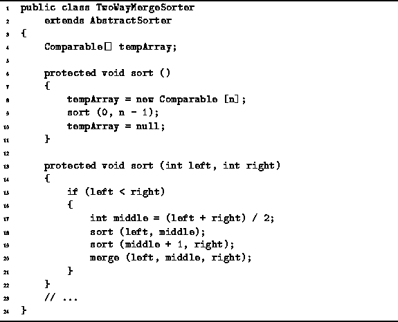

Data Structures and Algorithms
with Object-Oriented Design Patterns in Java
Data Structures and Algorithms
with Object-Oriented Design Patterns in Java
Program  gives the code for two sort
methods of the TwoWayMergeSorter class.
The no-arg sort method sets things up for the second,
recursive sort method.
First, it allocates a temporary array,
the length of which is equal to the length of the array to be sorted (line 8).
Then it calls the recursive sort method
which sorts the array (line 9).
After the array has been sorted,
the no-arg sort discards the temporary array (line 10).
gives the code for two sort
methods of the TwoWayMergeSorter class.
The no-arg sort method sets things up for the second,
recursive sort method.
First, it allocates a temporary array,
the length of which is equal to the length of the array to be sorted (line 8).
Then it calls the recursive sort method
which sorts the array (line 9).
After the array has been sorted,
the no-arg sort discards the temporary array (line 10).

Program: TwoWayMergeSorter class sort methods.
The second sort method implements the recursive, divide-and-conquer merge sort algorithm described above. The method takes three parameters--array, left and right. The first is the array to be sorted and the latter two specify the subsequence of the array to be sorted. If the sequence to be sorted contains more than one element, the sequence is split in two (line 17), each half is recursively sorted (lines 18-19), and then two sorted halves are merged (line 20).
 Copyright © 1998 by Bruno R. Preiss, P.Eng. All rights reserved.
Copyright © 1998 by Bruno R. Preiss, P.Eng. All rights reserved.